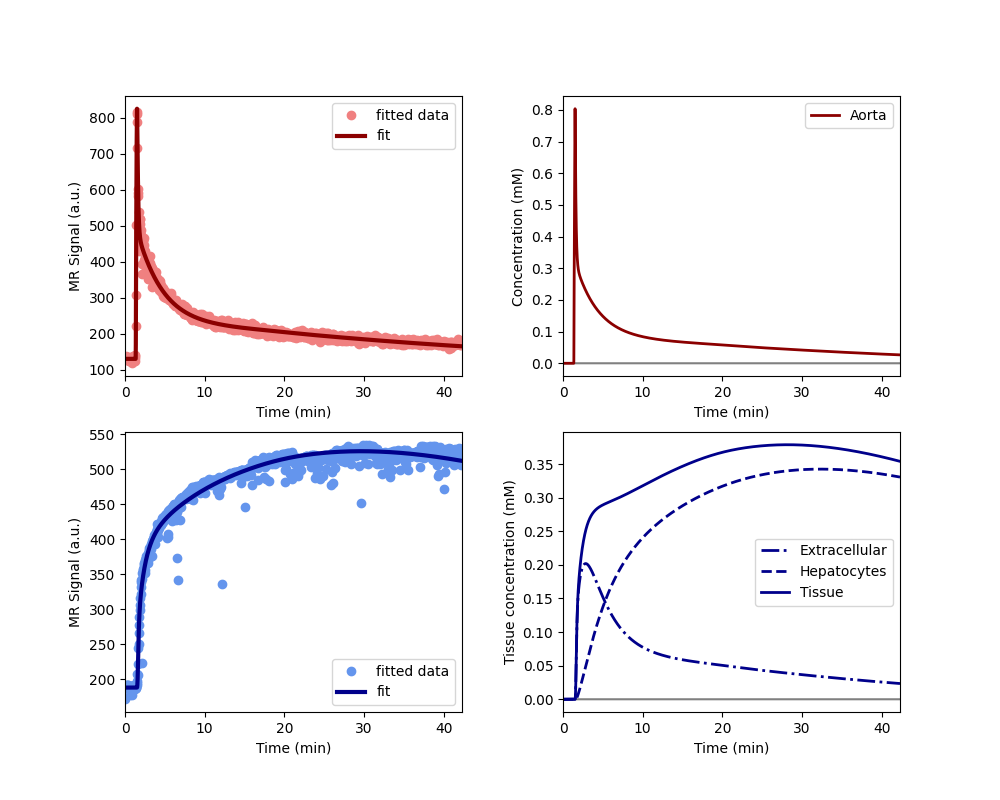

Note
Go to the end to download the full example code.
Clinical - rifampicin induced inhibition (short protocol)#
This example illustrates the use of AortaLiver for joint fitting of
aorta and liver signals to a whole-body model. The use case is provided by the
liver work package of the
TRISTAN project which develops imaging
biomarkers for drug safety assessment. The data and analysis was first
presented at the ISMRM in 2024 (Min et al 2024, manuscript in press).
The data were acquired in the aorta and liver of 10 healthy volunteers with dynamic gadoxetate-enhanced MRI, before and after administration of a drug (rifampicin) which is known to inhibit liver function. The assessments were done on two separate visits at least 2 weeks apart.
The research question was to what extent rifampicin inhibits gadoxetate uptake rate from the extracellular space into the liver hepatocytes (khe, mL/min/100mL) and excretion rate from hepatocytes to bile (kbh, mL/100mL/min).
2 of the volunteers only had the baseline assessment, the other 8 volunteers completed the full study. The results showed consistent and strong inhibition of khe (95%) and kbh (40%) by rifampicin. This implies that rifampicin poses a risk of drug-drug interactions (DDI), meaning it can cause another drug to circulate in the body for far longer than expected, potentially causing harm or raising a need for dose adjustment.
Note: this example is different to the 2 scan example of the same study in that this uses only the first scan to fit the model.
Reference#
Thazin Min, Marta Tibiletti, Paul Hockings, Aleksandra Galetin, Ebony Gunwhy, Gerry Kenna, Nicola Melillo, Geoff JM Parker, Gunnar Schuetz, Daniel Scotcher, John Waterton, Ian Rowe, and Steven Sourbron. Measurement of liver function with dynamic gadoxetate-enhanced MRI: a validation study in healthy volunteers. Proc Intl Soc Mag Reson Med, Singapore 2024.
Setup#
Model definition#
In order to avoid some repetition in this script, we define a function that returns a trained model for a single dataset:
def tristan_human_1scan(roi, par, **kwargs):
model = dc.AortaLiver(
# Injection parameters
weight = par['weight'],
agent = 'gadoxetate',
dose = par['dose_1'],
rate = 1,
# Acquisition parameters
field_strength = 3,
t0 = par['t0'],
TR = par['TR'],
FA = par['FA_1'],
TS = roi['time_1'][1]-roi['time_1'][0],
# Signal parameters
R10a = 1/par['T1_aorta_1'],
R10l = 1/par['T1_liver_1'],
# Tissue parameters
vol = par['liver_volume'],
)
xdata = (
roi['time_1'][roi['aorta_1_accept']] - roi['time_1'][0],
roi['time_1'][roi['liver_1_accept']] - roi['time_1'][0],
)
ydata = (
roi['aorta_1'][roi['aorta_1_accept']],
roi['liver_1'][roi['liver_1_accept']],
)
model.train(xdata, ydata, **kwargs)
return xdata, ydata, model
Check model fit#
Before running the full analysis on all cases, lets illustrate the results by fitting the baseline visit for the first subject. We use maximum verbosity to get some feedback about the iterations:
Iteration Total nfev Cost Cost reduction Step norm Optimality
0 1 8.3626e+06 4.57e+07
1 2 1.6423e+06 6.72e+06 4.71e+01 1.26e+07
2 3 5.1921e+05 1.12e+06 5.52e+01 1.07e+07
3 4 1.5301e+05 3.66e+05 9.17e+01 5.11e+06
4 5 6.4332e+04 8.87e+04 1.04e+02 1.41e+06
5 6 5.0805e+04 1.35e+04 7.87e+01 2.41e+05
6 8 5.0753e+04 5.22e+01 9.80e+00 2.81e+05
7 9 5.0029e+04 7.24e+02 3.36e+00 4.60e+04
8 10 4.9275e+04 7.54e+02 3.43e+00 1.46e+04
9 11 4.8810e+04 4.65e+02 7.00e+00 3.05e+04
10 14 4.8810e+04 0.00e+00 0.00e+00 3.05e+04
`xtol` termination condition is satisfied.
Function evaluations 14, initial cost 8.3626e+06, final cost 4.8810e+04, first-order optimality 3.05e+04.
Iteration Total nfev Cost Cost reduction Step norm Optimality
0 1 1.8267e+06 3.60e+08
1 2 8.5634e+04 1.74e+06 3.99e+02 1.74e+07
2 3 7.2320e+04 1.33e+04 1.63e+02 2.80e+06
3 4 6.8508e+04 3.81e+03 1.19e+02 1.53e+06
4 5 6.7614e+04 8.95e+02 5.37e+01 5.33e+05
5 6 6.7558e+04 5.58e+01 1.77e+01 6.80e+04
6 7 6.7553e+04 4.61e+00 3.08e+00 1.53e+03
7 8 6.7553e+04 1.14e-03 1.19e-01 6.83e+00
`xtol` termination condition is satisfied.
Function evaluations 8, initial cost 1.8267e+06, final cost 6.7553e+04, first-order optimality 6.83e+00.
Iteration Total nfev Cost Cost reduction Step norm Optimality
0 1 1.1634e+05 4.61e+04
1 5 1.1634e+05 0.00e+00 0.00e+00 4.61e+04
`xtol` termination condition is satisfied.
Function evaluations 5, initial cost 1.1634e+05, final cost 1.1634e+05, first-order optimality 4.61e+04.
Plot the results to check that the model has fitted the data. The plot also shows the concentration in the two liver compartments separately:
Print the measured model parameters and any derived parameters. Standard deviations are included as a measure of parameter uncertainty, indicate that all parameters are identified robustly:
model.print_params(round_to=3)
--------------------------------
Free parameters with their stdev
--------------------------------
First bolus arrival time (BAT): 73.285 (0.822) sec
Cardiac output (CO): 157.706 (3.929) mL/sec
Heart-lung mean transit time (Thl): 20.373 (1.153) sec
Heart-lung dispersion (Dhl): 0.604 (0.022)
Organs blood mean transit time (To): 22.73 (0.734) sec
Organs extraction fraction (Eo): 0.131 (0.003)
Organs extravascular mean transit time (Toe): 498.98 (17.765) sec
Body extraction fraction (Eb): 0.049 (0.003)
Liver extracellular volume fraction (ve): 0.466 (0.015) mL/cm3
Extracellular mean transit time (Te): 60.0 (2.889) sec
Extracellular dispersion (De): 0.844 (0.015)
Hepatocellular uptake rate (khe): 0.003 (0.0) mL/sec/cm3
Hepatocellular mean transit time (Th): 2555.398 (48.812) sec
----------------------------
Fixed and derived parameters
----------------------------
Hematocrit (H): 0.45
Biliary tissue excretion rate (Kbh): 0.0 mL/sec/cm3
Hepatocellular tissue uptake rate (Khe): 0.007 mL/sec/cm3
Biliary excretion rate (kbh): 0.0 mL/sec/cm3
Liver blood clearance (CL): 3.717 mL/sec
Fit all data#
Now that we have illustrated an individual result in some detail, we proceed with fitting the data for all 10 volunteers, at baseline and rifampicin visit. We do not print output for these individual computations and instead store results in one single dataframe:
results = []
# Loop over all datasets
for subj in rois.keys():
for visit in rois[subj].keys():
roi = rois[subj][visit]
par = pars[subj][visit]
# Generate a trained model for the scan:
_, _, model = tristan_human_1scan(roi, par, xtol=1e-3)
# Export fitted parameters as lists
rows = model.export_params(type='list')
# Add study, visit and subject info
rows = [row + [visit, subj] for row in rows]
# Add to the list of all results
results += rows
# Combine all results into a single dataframe.
cols = ['parameter', 'name', 'value', 'unit', 'stdev',
'visit', 'subject']
results = pd.DataFrame(results, columns=cols)
# Print all results
print(results.to_string())
parameter name value unit stdev visit subject
0 BAT First bolus arrival time 73.284554 sec 0.822234 control 001
1 CO Cardiac output 157.705552 mL/sec 3.928655 control 001
2 Thl Heart-lung mean transit time 20.372618 sec 1.153400 control 001
3 Dhl Heart-lung dispersion 0.603734 0.022263 control 001
4 To Organs blood mean transit time 22.730413 sec 0.733528 control 001
5 Eo Organs extraction fraction 0.131213 0.002976 control 001
6 Toe Organs extravascular mean transit time 498.980074 sec 17.764997 control 001
7 Eb Body extraction fraction 0.049431 0.002617 control 001
8 H Hematocrit 0.450000 0.000000 control 001
9 ve Liver extracellular volume fraction 0.466106 mL/cm3 0.015083 control 001
10 Te Extracellular mean transit time 60.000000 sec 2.888903 control 001
11 De Extracellular dispersion 0.843701 0.015255 control 001
12 khe Hepatocellular uptake rate 0.003360 mL/sec/cm3 0.000031 control 001
13 Th Hepatocellular mean transit time 2555.398327 sec 48.812266 control 001
14 Kbh Biliary tissue excretion rate 0.000391 mL/sec/cm3 0.000000 control 001
15 Khe Hepatocellular tissue uptake rate 0.007209 mL/sec/cm3 0.000000 control 001
16 kbh Biliary excretion rate 0.000209 mL/sec/cm3 0.000000 control 001
17 CL Liver blood clearance 3.717074 mL/sec 0.000000 control 001
18 BAT First bolus arrival time 73.214265 sec 0.535384 control 002
19 CO Cardiac output 41.532707 mL/sec 0.983774 control 002
20 Thl Heart-lung mean transit time 22.749015 sec 0.825618 control 002
21 Dhl Heart-lung dispersion 0.519008 0.014134 control 002
22 To Organs blood mean transit time 31.852560 sec 2.887955 control 002
23 Eo Organs extraction fraction 0.379940 0.014269 control 002
24 Toe Organs extravascular mean transit time 363.375674 sec 28.106119 control 002
25 Eb Body extraction fraction 0.010000 0.005734 control 002
26 H Hematocrit 0.450000 0.000000 control 002
27 ve Liver extracellular volume fraction 0.143205 mL/cm3 0.179568 control 002
28 Te Extracellular mean transit time 59.999998 sec 52.189474 control 002
29 De Extracellular dispersion 0.846092 0.117657 control 002
30 khe Hepatocellular uptake rate 0.004329 mL/sec/cm3 0.000139 control 002
31 Th Hepatocellular mean transit time 1508.459044 sec 70.641130 control 002
32 Kbh Biliary tissue excretion rate 0.000663 mL/sec/cm3 0.000000 control 002
33 Khe Hepatocellular tissue uptake rate 0.030232 mL/sec/cm3 0.000000 control 002
34 kbh Biliary excretion rate 0.000568 mL/sec/cm3 0.000000 control 002
35 CL Liver blood clearance 2.959866 mL/sec 0.000000 control 002
36 BAT First bolus arrival time 78.847792 sec 0.314544 drug 002
37 CO Cardiac output 60.763500 mL/sec 1.742877 drug 002
38 Thl Heart-lung mean transit time 9.000753 sec 0.558009 drug 002
39 Dhl Heart-lung dispersion 0.671841 0.023293 drug 002
40 To Organs blood mean transit time 27.830984 sec 1.768690 drug 002
41 Eo Organs extraction fraction 0.154686 0.010132 drug 002
42 Toe Organs extravascular mean transit time 302.955206 sec 30.312027 drug 002
43 Eb Body extraction fraction 0.059252 0.003367 drug 002
44 H Hematocrit 0.450000 0.000000 drug 002
45 ve Liver extracellular volume fraction 0.164832 mL/cm3 0.012104 drug 002
46 Te Extracellular mean transit time 40.798763 sec 5.221447 drug 002
47 De Extracellular dispersion 0.713709 0.060241 drug 002
48 khe Hepatocellular uptake rate 0.000320 mL/sec/cm3 0.000025 drug 002
49 Th Hepatocellular mean transit time 35999.999985 sec 76587.278641 drug 002
50 Kbh Biliary tissue excretion rate 0.000028 mL/sec/cm3 0.000000 drug 002
51 Khe Hepatocellular tissue uptake rate 0.001942 mL/sec/cm3 0.000000 drug 002
52 kbh Biliary excretion rate 0.000023 mL/sec/cm3 0.000000 drug 002
53 CL Liver blood clearance 0.256840 mL/sec 0.000000 drug 002
54 BAT First bolus arrival time 67.459315 sec 0.893137 control 003
55 CO Cardiac output 62.368489 mL/sec 1.347900 control 003
56 Thl Heart-lung mean transit time 17.792895 sec 1.025714 control 003
57 Dhl Heart-lung dispersion 0.417592 0.018162 control 003
58 To Organs blood mean transit time 27.423272 sec 1.764070 control 003
59 Eo Organs extraction fraction 0.153274 0.010301 control 003
60 Toe Organs extravascular mean transit time 287.532192 sec 23.326855 control 003
61 Eb Body extraction fraction 0.100241 0.004050 control 003
62 H Hematocrit 0.450000 0.000000 control 003
63 ve Liver extracellular volume fraction 0.150961 mL/cm3 0.067346 control 003
64 Te Extracellular mean transit time 29.140561 sec 12.371935 control 003
65 De Extracellular dispersion 0.676437 0.164602 control 003
66 khe Hepatocellular uptake rate 0.005452 mL/sec/cm3 0.000102 control 003
67 Th Hepatocellular mean transit time 2780.959998 sec 124.401350 control 003
68 Kbh Biliary tissue excretion rate 0.000360 mL/sec/cm3 0.000000 control 003
69 Khe Hepatocellular tissue uptake rate 0.036115 mL/sec/cm3 0.000000 control 003
70 kbh Biliary excretion rate 0.000305 mL/sec/cm3 0.000000 control 003
71 CL Liver blood clearance 4.765398 mL/sec 0.000000 control 003
72 BAT First bolus arrival time 65.772813 sec 0.560902 drug 003
73 CO Cardiac output 82.059091 mL/sec 1.608843 drug 003
74 Thl Heart-lung mean transit time 13.192487 sec 0.598452 drug 003
75 Dhl Heart-lung dispersion 0.269628 0.012525 drug 003
76 To Organs blood mean transit time 16.162011 sec 1.256496 drug 003
77 Eo Organs extraction fraction 0.128993 0.010763 drug 003
78 Toe Organs extravascular mean transit time 211.779644 sec 21.398541 drug 003
79 Eb Body extraction fraction 0.042629 0.001610 drug 003
80 H Hematocrit 0.450000 0.000000 drug 003
81 ve Liver extracellular volume fraction 0.206641 mL/cm3 0.012575 drug 003
82 Te Extracellular mean transit time 26.009640 sec 2.913880 drug 003
83 De Extracellular dispersion 0.617112 0.057744 drug 003
84 khe Hepatocellular uptake rate 0.000340 mL/sec/cm3 0.000026 drug 003
85 Th Hepatocellular mean transit time 35999.999901 sec 76873.448297 drug 003
86 Kbh Biliary tissue excretion rate 0.000028 mL/sec/cm3 0.000000 drug 003
87 Khe Hepatocellular tissue uptake rate 0.001647 mL/sec/cm3 0.000000 drug 003
88 kbh Biliary excretion rate 0.000022 mL/sec/cm3 0.000000 drug 003
89 CL Liver blood clearance 0.293300 mL/sec 0.000000 drug 003
90 BAT First bolus arrival time 73.195139 sec 0.311300 control 004
91 CO Cardiac output 41.538826 mL/sec 0.705432 control 004
92 Thl Heart-lung mean transit time 10.111776 sec 0.398740 control 004
93 Dhl Heart-lung dispersion 0.516668 0.010546 control 004
94 To Organs blood mean transit time 38.653778 sec 1.650549 control 004
95 Eo Organs extraction fraction 0.305039 0.010255 control 004
96 Toe Organs extravascular mean transit time 655.159049 sec 57.505970 control 004
97 Eb Body extraction fraction 0.150000 0.011725 control 004
98 H Hematocrit 0.450000 0.000000 control 004
99 ve Liver extracellular volume fraction 0.084902 mL/cm3 0.100234 control 004
100 Te Extracellular mean transit time 60.000000 sec 55.253253 control 004
101 De Extracellular dispersion 0.874848 0.107812 control 004
102 khe Hepatocellular uptake rate 0.002261 mL/sec/cm3 0.000037 control 004
103 Th Hepatocellular mean transit time 27282.972617 sec 9719.656462 control 004
104 Kbh Biliary tissue excretion rate 0.000037 mL/sec/cm3 0.000000 control 004
105 Khe Hepatocellular tissue uptake rate 0.026627 mL/sec/cm3 0.000000 control 004
106 kbh Biliary excretion rate 0.000034 mL/sec/cm3 0.000000 control 004
107 CL Liver blood clearance 2.003084 mL/sec 0.000000 control 004
108 BAT First bolus arrival time 65.482323 sec 0.060779 drug 004
109 CO Cardiac output 62.753157 mL/sec 0.553998 drug 004
110 Thl Heart-lung mean transit time 16.936108 sec 0.118179 drug 004
111 Dhl Heart-lung dispersion 0.430720 0.005038 drug 004
112 To Organs blood mean transit time 39.853780 sec 1.061726 drug 004
113 Eo Organs extraction fraction 0.238977 0.004488 drug 004
114 Toe Organs extravascular mean transit time 454.249590 sec 21.141636 drug 004
115 Eb Body extraction fraction 0.034185 0.002472 drug 004
116 H Hematocrit 0.450000 0.000000 drug 004
117 ve Liver extracellular volume fraction 0.193523 mL/cm3 0.006880 drug 004
118 Te Extracellular mean transit time 60.000000 sec 3.739272 drug 004
119 De Extracellular dispersion 0.799958 0.021239 drug 004
120 khe Hepatocellular uptake rate 0.000203 mL/sec/cm3 0.000017 drug 004
121 Th Hepatocellular mean transit time 4906.237290 sec 1759.758868 drug 004
122 Kbh Biliary tissue excretion rate 0.000204 mL/sec/cm3 0.000000 drug 004
123 Khe Hepatocellular tissue uptake rate 0.001047 mL/sec/cm3 0.000000 drug 004
124 kbh Biliary excretion rate 0.000164 mL/sec/cm3 0.000000 drug 004
125 CL Liver blood clearance 0.199291 mL/sec 0.000000 drug 004
126 BAT First bolus arrival time 69.236400 sec 0.825551 control 005
127 CO Cardiac output 58.456026 mL/sec 1.375280 control 005
128 Thl Heart-lung mean transit time 21.529880 sec 1.146627 control 005
129 Dhl Heart-lung dispersion 0.492574 0.010188 control 005
130 To Organs blood mean transit time 36.017553 sec 1.398485 control 005
131 Eo Organs extraction fraction 0.173096 0.005397 control 005
132 Toe Organs extravascular mean transit time 555.354989 sec 31.673165 control 005
133 Eb Body extraction fraction 0.059956 0.003777 control 005
134 H Hematocrit 0.450000 0.000000 control 005
135 ve Liver extracellular volume fraction 0.217990 mL/cm3 0.024626 control 005
136 Te Extracellular mean transit time 38.873061 sec 4.980701 control 005
137 De Extracellular dispersion 0.720025 0.047612 control 005
138 khe Hepatocellular uptake rate 0.004041 mL/sec/cm3 0.000060 control 005
139 Th Hepatocellular mean transit time 1745.023004 sec 42.415552 control 005
140 Kbh Biliary tissue excretion rate 0.000573 mL/sec/cm3 0.000000 control 005
141 Khe Hepatocellular tissue uptake rate 0.018535 mL/sec/cm3 0.000000 control 005
142 kbh Biliary excretion rate 0.000448 mL/sec/cm3 0.000000 control 005
143 CL Liver blood clearance 2.849858 mL/sec 0.000000 control 005
144 BAT First bolus arrival time 65.567442 sec 0.810994 control 006
145 CO Cardiac output 52.304540 mL/sec 0.883681 control 006
146 Thl Heart-lung mean transit time 20.392615 sec 0.869290 control 006
147 Dhl Heart-lung dispersion 0.285393 0.010783 control 006
148 To Organs blood mean transit time 25.733684 sec 1.906989 control 006
149 Eo Organs extraction fraction 0.261396 0.012463 control 006
150 Toe Organs extravascular mean transit time 284.290339 sec 19.167169 control 006
151 Eb Body extraction fraction 0.077196 0.003714 control 006
152 H Hematocrit 0.450000 0.000000 control 006
153 ve Liver extracellular volume fraction 0.280511 mL/cm3 0.077132 control 006
154 Te Extracellular mean transit time 57.785455 sec 14.708144 control 006
155 De Extracellular dispersion 0.721289 0.078328 control 006
156 khe Hepatocellular uptake rate 0.004933 mL/sec/cm3 0.000123 control 006
157 Th Hepatocellular mean transit time 2242.120542 sec 104.761346 control 006
158 Kbh Biliary tissue excretion rate 0.000446 mL/sec/cm3 0.000000 control 006
159 Khe Hepatocellular tissue uptake rate 0.017587 mL/sec/cm3 0.000000 control 006
160 kbh Biliary excretion rate 0.000321 mL/sec/cm3 0.000000 control 006
161 CL Liver blood clearance 3.409712 mL/sec 0.000000 control 006
162 BAT First bolus arrival time 70.817142 sec 0.210536 drug 006
163 CO Cardiac output 97.392192 mL/sec 1.601030 drug 006
164 Thl Heart-lung mean transit time 14.216235 sec 0.227963 drug 006
165 Dhl Heart-lung dispersion 0.286339 0.007635 drug 006
166 To Organs blood mean transit time 21.628408 sec 0.946002 drug 006
167 Eo Organs extraction fraction 0.125876 0.005817 drug 006
168 Toe Organs extravascular mean transit time 384.060059 sec 31.868195 drug 006
169 Eb Body extraction fraction 0.022271 0.001835 drug 006
170 H Hematocrit 0.450000 0.000000 drug 006
171 ve Liver extracellular volume fraction 0.293255 mL/cm3 0.012387 drug 006
172 Te Extracellular mean transit time 40.775832 sec 3.159105 drug 006
173 De Extracellular dispersion 0.682373 0.033408 drug 006
174 khe Hepatocellular uptake rate 0.000167 mL/sec/cm3 0.000027 drug 006
175 Th Hepatocellular mean transit time 35999.999366 sec 170779.426353 drug 006
176 Kbh Biliary tissue excretion rate 0.000028 mL/sec/cm3 0.000000 drug 006
177 Khe Hepatocellular tissue uptake rate 0.000568 mL/sec/cm3 0.000000 drug 006
178 kbh Biliary excretion rate 0.000020 mL/sec/cm3 0.000000 drug 006
179 CL Liver blood clearance 0.117652 mL/sec 0.000000 drug 006
180 BAT First bolus arrival time 68.765580 sec 0.402847 control 007
181 CO Cardiac output 64.482554 mL/sec 1.109398 control 007
182 Thl Heart-lung mean transit time 11.155573 sec 0.460775 control 007
183 Dhl Heart-lung dispersion 0.367102 0.017777 control 007
184 To Organs blood mean transit time 26.206531 sec 1.371824 control 007
185 Eo Organs extraction fraction 0.260562 0.008064 control 007
186 Toe Organs extravascular mean transit time 369.282467 sec 15.097211 control 007
187 Eb Body extraction fraction 0.050347 0.002540 control 007
188 H Hematocrit 0.450000 0.000000 control 007
189 ve Liver extracellular volume fraction 0.055383 mL/cm3 0.031001 control 007
190 Te Extracellular mean transit time 59.999984 sec 12.368591 control 007
191 De Extracellular dispersion 1.000000 0.072040 control 007
192 khe Hepatocellular uptake rate 0.003610 mL/sec/cm3 0.000060 control 007
193 Th Hepatocellular mean transit time 1974.329438 sec 64.079137 control 007
194 Kbh Biliary tissue excretion rate 0.000507 mL/sec/cm3 0.000000 control 007
195 Khe Hepatocellular tissue uptake rate 0.065185 mL/sec/cm3 0.000000 control 007
196 kbh Biliary excretion rate 0.000478 mL/sec/cm3 0.000000 control 007
197 CL Liver blood clearance 3.408576 mL/sec 0.000000 control 007
198 BAT First bolus arrival time 64.625886 sec 0.332376 drug 007
199 CO Cardiac output 70.168879 mL/sec 1.054399 drug 007
200 Thl Heart-lung mean transit time 14.614595 sec 0.367267 drug 007
201 Dhl Heart-lung dispersion 0.347900 0.011527 drug 007
202 To Organs blood mean transit time 19.196027 sec 0.935306 drug 007
203 Eo Organs extraction fraction 0.199663 0.007389 drug 007
204 Toe Organs extravascular mean transit time 259.926917 sec 13.393328 drug 007
205 Eb Body extraction fraction 0.045075 0.001403 drug 007
206 H Hematocrit 0.450000 0.000000 drug 007
207 ve Liver extracellular volume fraction 0.170606 mL/cm3 0.007177 drug 007
208 Te Extracellular mean transit time 49.485513 sec 3.901522 drug 007
209 De Extracellular dispersion 0.763924 0.031341 drug 007
210 khe Hepatocellular uptake rate 0.000169 mL/sec/cm3 0.000013 drug 007
211 Th Hepatocellular mean transit time 35999.723567 sec 63534.314136 drug 007
212 Kbh Biliary tissue excretion rate 0.000028 mL/sec/cm3 0.000000 drug 007
213 Khe Hepatocellular tissue uptake rate 0.000990 mL/sec/cm3 0.000000 drug 007
214 kbh Biliary excretion rate 0.000023 mL/sec/cm3 0.000000 drug 007
215 CL Liver blood clearance 0.188336 mL/sec 0.000000 drug 007
216 BAT First bolus arrival time 74.639480 sec 1.016471 control 008
217 CO Cardiac output 119.137649 mL/sec 3.244366 control 008
218 Thl Heart-lung mean transit time 16.273849 sec 1.273485 control 008
219 Dhl Heart-lung dispersion 0.430884 0.018885 control 008
220 To Organs blood mean transit time 21.224952 sec 1.184117 control 008
221 Eo Organs extraction fraction 0.162481 0.007378 control 008
222 Toe Organs extravascular mean transit time 367.446313 sec 22.082465 control 008
223 Eb Body extraction fraction 0.042488 0.002736 control 008
224 H Hematocrit 0.450000 0.000000 control 008
225 ve Liver extracellular volume fraction 0.191174 mL/cm3 0.021185 control 008
226 Te Extracellular mean transit time 24.325895 sec 3.288436 control 008
227 De Extracellular dispersion 0.575164 0.076495 control 008
228 khe Hepatocellular uptake rate 0.004331 mL/sec/cm3 0.000073 control 008
229 Th Hepatocellular mean transit time 1617.090913 sec 45.096951 control 008
230 Kbh Biliary tissue excretion rate 0.000618 mL/sec/cm3 0.000000 control 008
231 Khe Hepatocellular tissue uptake rate 0.022656 mL/sec/cm3 0.000000 control 008
232 kbh Biliary excretion rate 0.000500 mL/sec/cm3 0.000000 control 008
233 CL Liver blood clearance 4.458200 mL/sec 0.000000 control 008
234 BAT First bolus arrival time 68.308576 sec 0.635615 drug 008
235 CO Cardiac output 110.036418 mL/sec 2.179234 drug 008
236 Thl Heart-lung mean transit time 17.764527 sec 0.760281 drug 008
237 Dhl Heart-lung dispersion 0.394451 0.012904 drug 008
238 To Organs blood mean transit time 17.078267 sec 0.880070 drug 008
239 Eo Organs extraction fraction 0.112790 0.004246 drug 008
240 Toe Organs extravascular mean transit time 456.738357 sec 26.513554 drug 008
241 Eb Body extraction fraction 0.024277 0.001390 drug 008
242 H Hematocrit 0.450000 0.000000 drug 008
243 ve Liver extracellular volume fraction 0.152177 mL/cm3 0.005622 drug 008
244 Te Extracellular mean transit time 28.094765 sec 2.321161 drug 008
245 De Extracellular dispersion 0.497588 0.058166 drug 008
246 khe Hepatocellular uptake rate 0.000165 mL/sec/cm3 0.000013 drug 008
247 Th Hepatocellular mean transit time 35999.999990 sec 66229.393129 drug 008
248 Kbh Biliary tissue excretion rate 0.000028 mL/sec/cm3 0.000000 drug 008
249 Khe Hepatocellular tissue uptake rate 0.001082 mL/sec/cm3 0.000000 drug 008
250 kbh Biliary excretion rate 0.000024 mL/sec/cm3 0.000000 drug 008
251 CL Liver blood clearance 0.145045 mL/sec 0.000000 drug 008
252 BAT First bolus arrival time 71.807747 sec 0.293114 control 009
253 CO Cardiac output 107.761245 mL/sec 1.616246 control 009
254 Thl Heart-lung mean transit time 16.632266 sec 0.349305 control 009
255 Dhl Heart-lung dispersion 0.455982 0.012136 control 009
256 To Organs blood mean transit time 35.711026 sec 1.229888 control 009
257 Eo Organs extraction fraction 0.122325 0.003850 control 009
258 Toe Organs extravascular mean transit time 663.729653 sec 43.307339 control 009
259 Eb Body extraction fraction 0.060020 0.002498 control 009
260 H Hematocrit 0.450000 0.000000 control 009
261 ve Liver extracellular volume fraction 0.132123 mL/cm3 0.017552 control 009
262 Te Extracellular mean transit time 31.072739 sec 5.602057 control 009
263 De Extracellular dispersion 0.700326 0.075782 control 009
264 khe Hepatocellular uptake rate 0.002328 mL/sec/cm3 0.000038 control 009
265 Th Hepatocellular mean transit time 2100.572110 sec 58.837585 control 009
266 Kbh Biliary tissue excretion rate 0.000476 mL/sec/cm3 0.000000 control 009
267 Khe Hepatocellular tissue uptake rate 0.017618 mL/sec/cm3 0.000000 control 009
268 kbh Biliary excretion rate 0.000413 mL/sec/cm3 0.000000 control 009
269 CL Liver blood clearance 2.761060 mL/sec 0.000000 control 009
270 BAT First bolus arrival time 80.597136 sec 1.003122 drug 009
271 CO Cardiac output 92.500704 mL/sec 2.124204 drug 009
272 Thl Heart-lung mean transit time 12.753209 sec 1.300593 drug 009
273 Dhl Heart-lung dispersion 0.828185 0.058510 drug 009
274 To Organs blood mean transit time 59.644838 sec 1.762501 drug 009
275 Eo Organs extraction fraction 0.118027 0.003368 drug 009
276 Toe Organs extravascular mean transit time 798.396057 sec 77.040942 drug 009
277 Eb Body extraction fraction 0.022000 0.003785 drug 009
278 H Hematocrit 0.450000 0.000000 drug 009
279 ve Liver extracellular volume fraction 0.191323 mL/cm3 0.007894 drug 009
280 Te Extracellular mean transit time 60.000000 sec 4.329471 drug 009
281 De Extracellular dispersion 0.701639 0.033274 drug 009
282 khe Hepatocellular uptake rate 0.000138 mL/sec/cm3 0.000019 drug 009
283 Th Hepatocellular mean transit time 2896.260778 sec 885.703855 drug 009
284 Kbh Biliary tissue excretion rate 0.000345 mL/sec/cm3 0.000000 drug 009
285 Khe Hepatocellular tissue uptake rate 0.000721 mL/sec/cm3 0.000000 drug 009
286 kbh Biliary excretion rate 0.000279 mL/sec/cm3 0.000000 drug 009
287 CL Liver blood clearance 0.165402 mL/sec 0.000000 drug 009
288 BAT First bolus arrival time 67.460513 sec 0.146864 control 010
289 CO Cardiac output 64.779967 mL/sec 0.779659 control 010
290 Thl Heart-lung mean transit time 19.903274 sec 0.180419 control 010
291 Dhl Heart-lung dispersion 0.288279 0.004926 control 010
292 To Organs blood mean transit time 39.982399 sec 1.308766 control 010
293 Eo Organs extraction fraction 0.162963 0.004124 control 010
294 Toe Organs extravascular mean transit time 796.144538 sec 54.145039 control 010
295 Eb Body extraction fraction 0.034183 0.003266 control 010
296 H Hematocrit 0.450000 0.000000 control 010
297 ve Liver extracellular volume fraction 0.091759 mL/cm3 0.104063 control 010
298 Te Extracellular mean transit time 59.996211 sec 47.664253 control 010
299 De Extracellular dispersion 0.858991 0.105532 control 010
300 khe Hepatocellular uptake rate 0.002714 mL/sec/cm3 0.000059 control 010
301 Th Hepatocellular mean transit time 1997.463261 sec 58.641039 control 010
302 Kbh Biliary tissue excretion rate 0.000501 mL/sec/cm3 0.000000 control 010
303 Khe Hepatocellular tissue uptake rate 0.029582 mL/sec/cm3 0.000000 control 010
304 kbh Biliary excretion rate 0.000455 mL/sec/cm3 0.000000 control 010
305 CL Liver blood clearance 2.920395 mL/sec 0.000000 control 010
306 BAT First bolus arrival time 80.552454 sec 1.395198 drug 010
307 CO Cardiac output 64.806678 mL/sec 1.982760 drug 010
308 Thl Heart-lung mean transit time 20.883123 sec 1.959374 drug 010
309 Dhl Heart-lung dispersion 0.655566 0.031418 drug 010
310 To Organs blood mean transit time 50.644141 sec 1.800063 drug 010
311 Eo Organs extraction fraction 0.168593 0.004438 drug 010
312 Toe Organs extravascular mean transit time 795.483060 sec 60.840000 drug 010
313 Eb Body extraction fraction 0.029852 0.004793 drug 010
314 H Hematocrit 0.450000 0.000000 drug 010
315 ve Liver extracellular volume fraction 0.206544 mL/cm3 0.009054 drug 010
316 Te Extracellular mean transit time 56.756032 sec 4.039386 drug 010
317 De Extracellular dispersion 0.626997 0.039847 drug 010
318 khe Hepatocellular uptake rate 0.000156 mL/sec/cm3 0.000019 drug 010
319 Th Hepatocellular mean transit time 4839.346278 sec 2039.112507 drug 010
320 Kbh Biliary tissue excretion rate 0.000207 mL/sec/cm3 0.000000 drug 010
321 Khe Hepatocellular tissue uptake rate 0.000755 mL/sec/cm3 0.000000 drug 010
322 kbh Biliary excretion rate 0.000164 mL/sec/cm3 0.000000 drug 010
323 CL Liver blood clearance 0.172858 mL/sec 0.000000 drug 010
Plot individual results#
Now lets visualise the main results from the study by plotting the drug
effect for all volunteers, and for both biomarkers: uptake rate khe
and excretion rate kbh:
# Set up the figure
clr = ['tab:blue', 'tab:orange', 'tab:green', 'tab:red', 'tab:purple',
'tab:brown', 'tab:pink', 'tab:gray', 'tab:olive', 'tab:cyan']
fs = 10
fig, (ax1, ax2) = plt.subplots(1, 2, figsize=(8,3))
fig.subplots_adjust(wspace=0.5)
ax1.set_title('Hepatocellular uptake rate', fontsize=fs, pad=10)
ax1.set_ylabel('khe (mL/min/100mL)', fontsize=fs)
ax1.set_ylim(0, 60)
ax1.tick_params(axis='x', labelsize=fs)
ax1.tick_params(axis='y', labelsize=fs)
ax2.set_title('Biliary excretion rate', fontsize=fs, pad=10)
ax2.set_ylabel('kbh (mL/min/100mL)', fontsize=fs)
ax2.set_ylim(0, 6)
ax2.tick_params(axis='x', labelsize=fs)
ax2.tick_params(axis='y', labelsize=fs)
# Pivot data for both visits to wide format for easy access:
v1 = pd.pivot_table(results[results.visit=='control'], values='value',
columns='parameter', index='subject')
v2 = pd.pivot_table(results[results.visit=='drug'], values='value',
columns='parameter', index='subject')
# Plot the rate constants in units of mL/min/100mL
for s in v1.index:
x = ['baseline']
khe = [6000*v1.at[s,'khe']]
kbh = [6000*v1.at[s,'kbh']]
if s in v2.index:
x += ['rifampicin']
khe += [6000*v2.at[s,'khe']]
kbh += [6000*v2.at[s,'kbh']]
color = clr[int(s)-1]
ax1.plot(x, khe, '-', label=s, marker='o', markersize=6, color=color)
ax2.plot(x, kbh, '-', label=s, marker='o', markersize=6, color=color)
plt.show()
# Choose the last image as a thumbnail for the gallery
# sphinx_gallery_thumbnail_number = -1
Total running time of the script: (6 minutes 27.512 seconds)